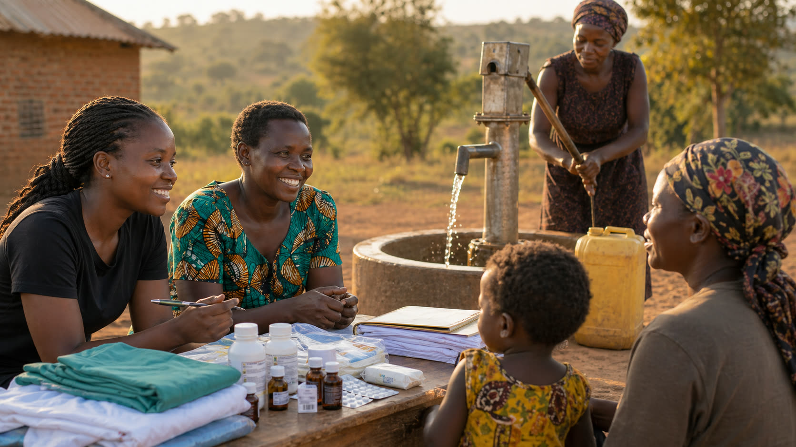

Current Giving Status
Supporters should use the contact page for giving conversations until secure online processing is configured.
Faith-rooted nonprofit ministry for community care, partnership, and Gospel-centered service.

Donor Policy
This policy sets the standard for donor conversations now and for secure online giving when it is activated.
Supporters should use the contact page for giving conversations until secure online processing is configured.
Donation receipts should identify the organization, date, amount, and whether any goods or services were provided.
Project-specific gifts should be accepted only when the project, budget, local partner, and reporting plan are approved.
Donor names, emails, phone numbers, and addresses should not be sold, rented, or shared for unrelated marketing.
Funds should support approved programs, community care, ministry operations, and reporting. If a project is fully funded or cannot proceed as planned, leadership should communicate the best alternate use before moving restricted funds.